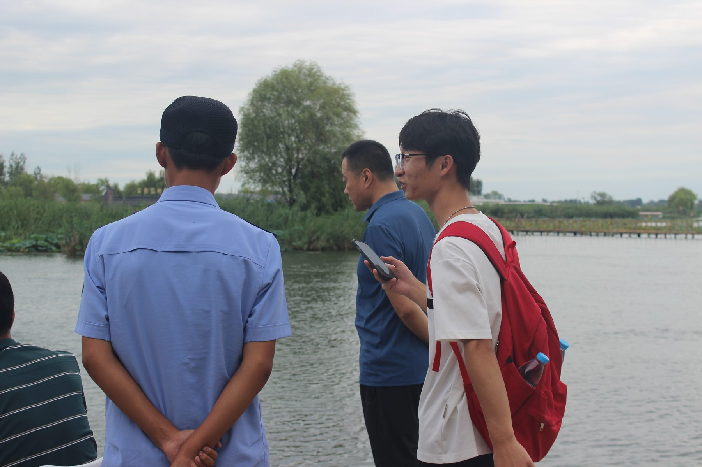
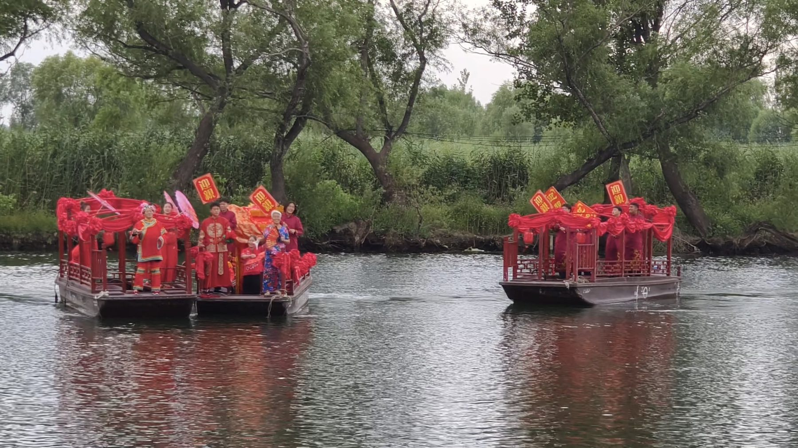

示例文章 · 可整篇替换
一次水上的走访
这是一篇用来演示排版的示例文章。它存在的唯一目的，是让你看到标题、导语、图片、引文、表格在电脑和手机上分别长什么样。正式发文章时，把这一篇删掉或整篇改写即可。

早上六点半上船，水面还是灰的。船工说这个点最好，人少，鸟多，风也没起来。我们沿着水道往里走，两侧的芦苇比人高，声音被收得很干净，只剩下橹划开水面的动静。
这次走访想弄清楚的其实是一个很简单的问题：散落在淀区各处的点位，彼此之间有没有可能连成一条走得通的路。
先看路，再看点
我们把一天分成了三段：清晨看水面，上午走进村子，傍晚回到岸边。三段之间不是简单的先后关系，而是三种不同的观察方式。水上看的是距离和航道，村里看的是人怎么生活，岸上看的是游客从哪儿来、在哪儿停。

三种被反复提到的困扰
- 点位之间缺少明确的先后顺序，游客容易在几个相邻的景点之间来回折返。
- 水路的开放时间与岸上设施的开放时间对不上，行程很难一次排顺。
- 同一个故事在不同点位被讲成不同的版本，听完反而更模糊。
「你们要是能给条清楚的顺序，我们就知道先带客人去哪儿了。」
这句话是当天被重复得最多的。它指向的不是缺内容，而是缺一条把内容串起来的线索。
记录方式
当天我们用了三种记录方式并行，互相校对。
| 方式 | 记录内容 | 用途 |
|---|---|---|
| 随行笔记 | 时间、地点、对话要点 | 还原行程与判断依据 |
| 影像 | 水面、村落、岸线 | 作为版面素材与现场佐证 |
| 轨迹 | 航道路径与停留时长 | 测算点位之间的实际通行时间 |
表格在手机上可以左右滑动，不会把页面撑宽。

走访只是一个开头。接下来要做的，是把这些散点的记录整理成可以比较的信息，再放回地图上，看看它们能不能真的连成一条路。